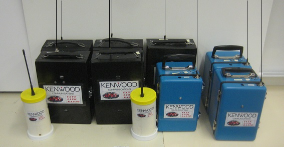
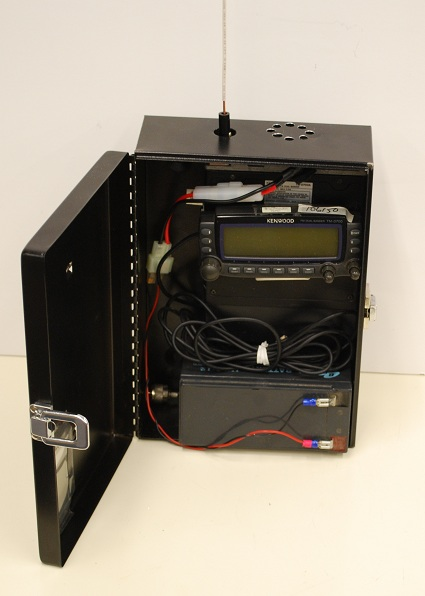

Cave-link Radio
Cave-link Radio
US Naval Academy Satellite Lab,
Bob Bruninga, WB4APR
bruninga att usna dot edu
Cave-link Radio
US Naval Academy Satellite Lab,
Bob Bruninga, WB4APR
bruninga att usna dot edu
APRS Cave-Link uses the TEXT and POSITION relay capability built into some APRS radios for extending cave radio VHF/UHF communications by 7 to 14 linear hops with no prior infrastructure. This is accomplished by placing handheld (relay capable) walkie-talkies or relay boxes along a cave passage. Communications throughout the multi-hop system can be maintained including links topside. Although this concept dates back to the birth of APRS technology in the mid 1990's ( see the original text file), the concept has recently been updated since the introduction in 2010 of the Kenwood TH-D72 APRS Handi-Talkie (HT) (shown at right) which has a built-in RELAY capability.
SUCCESS! - Mammoth Cave Test - 2 Mar 2013: With the support of the National Park Service, and NSS volunteers we conducted an APRS test in Mammoth Cave on 2-3 March 2013. The test was conducted by WB4APR, KG4LVA, KY4JME, KJ4AJP, and KG4CSQ under the care of Ranger Rick Toomey and NSS member Gary Gibula and others. We fielded 8 boxed TMD700/710 radios and 5 THD72 handhelds for relay plus several other D7 walkie talkies for communications. We also carried FRS radios for short range voice communications with unlicensed volunteers. After a few hours of debugging, the test was successful in extending the data link the entire 1 mile length from the elevator to the Carmichael entrance. KG4LVA manned a topside IGate at Ranger Headquarters and KY4JME manned an APRS station in the Snowball room below ground.
 LESSONS LEARNED: After the inital debugging phase, we demonstrated the ability to simply walk the cave, until data was lost and then back up a few feet to regain the link and then place a radio on a convenient rock and continuing. The photo at right shows ten of the digipeaters used for the test. The black cash boxes and blue hamfest special boxes contain D700 or D710 APRS radios and a 9AH gel cell battery. They are shown here with their longer 2 meter bananna plug antennas. The smaller PVC enclosures housed the portable TH-D72 walkie talkies. Though in the dry Mammoth cave passages, we didn't bother with the enclosures and just set the HT on a rock. Here is a quick look at some salient observations....
RESULTS:
The scale map above shows the approximate location of the UHF digipeaters and the lengths of each link. Notice some are more or less straight and some are almost as long but have significan bends. Since RF absorption is the main limiting factor, most of our practical experience with radio propogation must be relearned in this environment. This same 14 hop APRS link along the Appalachain Trail can cover the 2000 mile distance from Georiga to Maine, yet here underground, it only goes one mile but can still be useful.
Future Volunteer Testing Welcomed: Since the results show that UHF is the preferred band, then anyone with a pair of $15 FRS radios (also UHF) from Walmart can continue to conduct range-test data in a variety of passages to determine typical ranges for typical passage types both dry and wet. This easily obtained data can then be used in advance to determine relay locations for future cave expeditions with actual APRS data radios. This test was conducted in large dry Mammoth cave passages about the size of subway passages, so we anxiously await input from NSS cavers using UHF FRS radios in more typical passages to see if the ranges are comparable. Theoretically, according to waveguide theory then passages as small as 1' wide should allow UHF propagation. However, using this theory, VHF should have been fine down to 4' wide, and yet did worse than UHF even in 30' wide passages. Hence, the need for more actual testing.
Historically, UHF ranges of a few hundred feet have not encouraged any practical use of UHF radios in caves except for maybe long vertical drops. But the ability to now link together multiple such hops should open up promise for more experimentation by actual cavers than just the radio hams.
APPLICATIONS: We anticipate this APRS communications capability will have value in long expeditions underground when there are significant obstacles that slow ingress and egress. By transiting these difficult areas of a few hundered feet with APRS links instead of wire or runner, then communications with the topside or base camp are easier to maintain.
The remainder of this page will be updated with actual results as we have time to develop it.
Preliminary Packet Penetration Test Results: On 3 Jan 2013, KI4RDT parked his car in the Hotel parking lot with a dipole antenna on his mobile APRS packet rig beaconing every 12 seconds and took the Discovery tour through the Cave's Rotunda room. He heard packets solid into the entrance up to the metal gate. Then nothing until a few open-squelch bursts in the Rotunda as shown on this map. These weak bursts showed that we are within about 16 dB for a successful packet link. We can gain this with a topside four-dipole-array , a 3 element arrow antenna in the cave, 50 watts from the mobile, and better alignment directly over the caver. See the gain pattern for the 4 dipole array. It has no boom so it can be rolled up for easy transport. We can get 2 dB more gain if we park the test car on top of the test location (as shown here).
Igate Test-2: In Early January 2013, KG4VLA, John took his APRS laptop and IGate software and confirmed he can sit in the Hotel Lobby and tie in to the APRS-IS via the local WiFi there.
Cave-link radio is a unique new tool for texting and position reporting underground
for both exploration and Cave Rescue.
Cave-Link can be established as Cave Rescue teams proceed into the cave by placing automatic relays called digipeaters (below right) at each major change in direction or weakness in signal strength. The map below shows 6 digipeaters labeled CAVE1 through CAVE6 in appropriate locations in Collier's Cave near Florence, Alabama, my home town. The green lines are surface contour, blue is the Tennessee river and yellow are underground passages. Red indicate overhead passages and violet shows pits at lower levels. The dashed line is the trail to the nearest road. Notice the quarter mile range scale of this map in the upper left corner. The standard resolution for APRS is limited to about 60 feet without special techniques. This stick-map was drawn back in the 1997 time frame before Google Maps. Now in 2012, we link to the APRS.FI Google maping page for much better quality displays.
 DIGIPEATER PACKAGING: The original packaging for the handheld radios (digipeaters) is shown on the left side of the image to the right, but two lighter weight versions are on the right using peanut butter jar lids over the same 3" pipe but without the two expensive and heavy reducer and cap fittings. Below right is a photo of the cash-box enclosure that just fits the D700. The 9 AH battery is the tightest component and must be insulated from the lid which compresses these connectors when closed. Except for Vertical Links, the D700 digipeaters will be set at 5 watts to emulate a D72.
Zooming out to the 16 mile range shows where this cave activity is located relative to other landmarks and local Ham radio activity in real time:
The above maps were the hand-made vector maps of the 1990's APRS system. Now APRS is fully integrated into Google maps as shown below. Just go to the global web page http://aprs.fi and enter Florence Alabama. Then zoom to the exact coordinates (maybe 34N 45.83 and 87W 44.71?). Anyway, imagine if you could see on this map the locations of people IN THE CAVE using this technique (assuming they carried with them a copy of a geographically correct map of the cave for entering their coordinates).
COMMUNICATION VHF HOPS: APRS works below ground just as it does above ground by links between small portable digipeaters as shown below. The problem, of course, is the very limited range of each radio underground. But with the new Kenwood TH-D72 radios with texting and link relay built-in, the normally short range can be relayed from link to link around significant corners. Just strategically place digipeating radios at the end of each other radio's coaverage area all along the cave as shown below. Notice that vertical links far within the cave can also be used to shorten the longer paths. VHF works maybe through 140' max using beams and 50W. Another possibility is the use of passive coupling in caves where vertical electrical power penetrations exist (see sketch)
PATH CONSIDERATIONS: The problem is, how to truncate the cave path so that it is suitable for the existing topside APRS system (limited to 2 hops). This has been solved using existing hardware by assigning the higher path counts as SUBSTITUTION-ALIASES in the VERTical and TOPside digipeaters of such a vertical link as shown above right. All cavers would use the path of HOP7-7,WIDE2-2. This works everywhere even topside since all HOPn-N part of the path is replaced by the digipeater TOP or VERT callsigns and then only the WIDE2-2 or WIDE2-1 continues topside. Notice that an IGate must be within one digipeater hop of the TOPside digi because both W2-2 and W2-1 can occur. This quirk is because only 4 such aliases are possible in each digi. This quirk would go away if the TNC's either had 7 potential aliases or if they provided PREMPTIVE digipeating that would automatically truncate all-prior paths. But at least it gets us operating now. If cavers transition to H77,H77,W22 at CAVE7 and beyond, then they have coverage all the way out to CAVE14, but this path fails if they try to use it at CAVE4 or 5.
HF VERTICAL LINKS: Also notice that vertical links can short-cut the ever increasing path by linking upward throught the rock using VHF and 50 Watts up to 140' and maybe up to 300' or so using HF links. Once topside, all these Vertical links are only 1 hop apart. A possible location for 5 of these vertical links for the Mammoth main cave is shown below. They might be spaced about every mile or less, which allows then every point along the main cave to be within 7 or so hops of these nodes. The HF node hardware could use an FT-817 radio and external TNC as shown below right. The cave node will lay out their HF antenna horizontally along the length of the passage. But the topside HF nodes would use a pair of crossed dipoles. One to align with the cave tunnel below, and the other to have a broadside orientation for best link with the other topside HF nodes. of course, all of this needs to be tested! - Volunteers??
Initial HF Test Results: Just to get some experience with HF on the ground, I connected two FT-817 portables with KPC3 TNC's to a pair of 80m dipoles and placed them about 0.4 miles apart on the ground (football fields less than 10 feet above sealevel (sea was adjacent). See photo at right. Dipoles wrapped around the radio for carrying. The results were dismal. Over that distance even in air, signals were way too noisy for packet on 80m, even after going back and getting a tuner. Lesson #2: Do not use magent wire, use thick insulated wire for your dipoles so you can see them and so they dont end up in a million knots!
Success: Before leaving, however, I shortened the dipoles for 15m and this time, signals were strong and the link was solid. This test was not intended to test the through ground performance, but was to test the above-ground link-to-link performance. This would allow these HF backbones to then link the below ground packets back to headquarters without needing cross-band TNC's at each node topside (though cross band links below ground is needed to communicate with the cavers and their HT's).
Four Dipole VHF Gain Array: The photo below shows the design of this 9 to 11 dBi VHF gain antenna that can be layed on the ground above the cave or in a passageway. This plus 50 Watt radios can hopefully make VHF packet work through about 150' of relatively dry rock. The elements are made from #14 electrical wire and are held in place with a catenary of rope. This seemed like a good idea until it was rolled up for carrying. It's a mess. My next version will tape the elements to small fiberglass rods that will hold the dipoles straight without all the rope.
Arrow VHF/UHF Gain Antenna: Another great gain antenna for VHF use in caves is the popular ARROW antenna used by satellite enthusiasts as shown to the right. It is composed of threaded aluminum arrows which can be disassembled and carried in a 2.5" diameter tube abotu 2 feet long. It has the advantage of being able to be hand directed and optimized for the best angle of arrival and polarity of the topside signal. The VHF gain is about 8 dBi and the UHF elements are not needed. Connect directly to the VHF driven element since the diplexer in the handle cannot handle the 50W of a D700 radio. The Arrow also comes as a 4 element model with 1 dB more gain.
APRS Radio Displays: Since APRS digipeaters relay digital information, voice communications is not possible. But positions, status and messages are. Typically, the cavers team will carry one of the Kenwood APRS data walkie-talkies shown to the right. A blow up of the screen shows the direction and distance to any object or station heard, in this case, the station KT5TK-11. This photo is showing a Balloon about 0.2mi to the SE (though there are 200 other APRS symbols that may be used for stations. The human figure would probably be used by cavers. The letters/numbers in the middle of the display are the Grid Square and of no practical value here in a cave.
Similarly the screen can show text messages up to 48 bytes long displayed as two pages of two lines per page. THe TH-D72 extends this to 64 bytes and the yaesu allows up to 80 bytes. Shown here is the original version of the D7 walkie talkie. It can be used by anyone in a cave for texting, but only the modern D72 version with built-in relay can do the link portion. This means, you only need seven of the D72 radios forming the main link, but anyone on the caving party can carry any other APRS radio, D7, VX8R, etc) and still be able to text.
POSITION REPORTING: Of course GPS does not work underground, but any two people looking at the same map can report their position by simple grid marks on the map. The resolution and accuracy is as good as the map was drawn and the precision of the person estimating his coordinates on the map. As long as the cavers have a paper copy of a gridded map which is the same as everyone else including observers topside, then everyone will see where everyone else is on that map. The caver just manually enters his lat/long by looking at the grid on his paper map! For exxample, this version of the map has the grid overlayed. Team1 is located at N34 45.93 and W87 45.35. It does not matter if this is geologically accurate or not. What only matters is that everyone is using the same copy of the same map. Please see the detail hand map for Mammoth.
Waveguide Effect: For what it is worth, VHF should theoretically work OK in conducting metal passages down to about 4' wide for a vertical antenna as shown below right (staying well above the 3' cutoff). The theoretical high-pass cut-off frequency is as shown (all freqs above that freq will pass). The cutoff dimension is determined by the horizontal width for a vertical antenna or by the height for a horizontal antenna. Of course, cave walls are not metalic and act more closely like anechoic chamber attenuators snuffing out RF over very short distances. Some people say UHF does better in a cave, but then it has 10 dB more path loss and only a foot between nulls (more critical placement?) But to go through rock and earth it is well established that the lower the frequency the better. Operation below even 1 MHz is preferred for greater penetration typical for vertical links to above ground.
MAP DRAWING: All of the cave maps above were drawn in only about an hour using the MAPFIX.EXE program provided with APRSdos (back in 1997). Remember, since GPS is not used inside the cave, the map can be any free-hand sketch that visually represents the best known knowledge of the cave. As long as everyone then uses the same map and grid, then everyone will see the same tactical situation independent of the absolute LAT/LONG coordinates. This includes objects and notes placed anywhere on the map by anyone above or below ground. These days, the overlay Cave route would need to be vectorized in the original APRSdos .POS format or in a GPX format for working with Google Maps.
MAP RESOLUTION: Typically in cave rescue, the real advantage of APRS Cave-Link is the digital text messaging of status and progress. Exact map tracing is only of value to show approximate positions since the precision limit of APRS (in these radios) is only to the nearest 60 feet. But if higher resolution than 60 feet is needed, say to 6 feet, then someone can sketch the map to 10 times larger than actual to give resolution down to the nearest 6 feet if needed.
Other Reading: I just found a great copy of the Speleonics Newsletter with a great article on VHF/UHF as well as HF Radio experiments in caves. They reported only 400 to 700' operation in a lava-tube cave (about 0.1 mile). Another useful link is the link of the local Mammoth Cave Radio Club who put on the Hamfest in Cave city every year on the first weekend in March. They have not done any cave radio expeiments in recent memory...
Return To: the APRS home page
{kind=link}
{kind=link}
{kind=link}
{kind=link}
{kind=link}
{kind=link}
{kind=link}
{kind=link}
{kind=link}
{kind=link}
{kind=link}
{kind=link}
{kind=link}
{kind=link}
{kind=link}